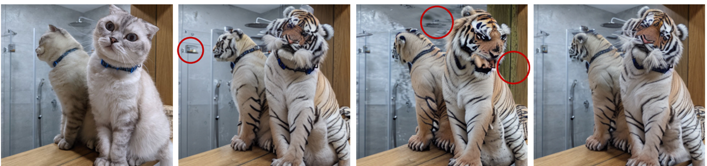
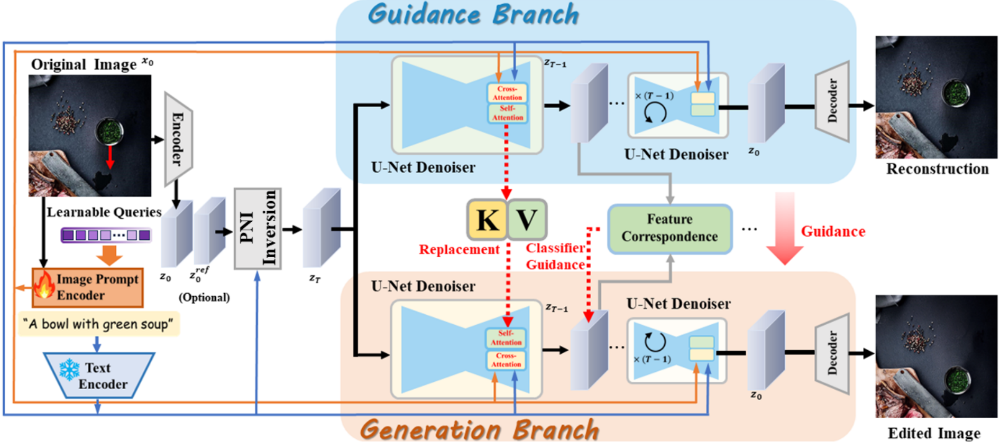
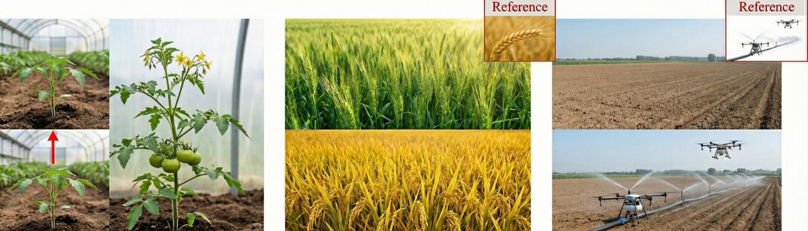

VersaFusion: Fine-Grained Image Editing Without Fine-Tuning
Text-to-image diffusion models are remarkable at generating images and surprisingly awkward at editing them. Ask for a small change — move the object, extend the canvas, make the seedling grow — and the model happily re-imagines the background, the texture and the identity of the subject along with it. Drag-style editors built on GANs or diffusion models fix some of this, but the strongest of them need per-image fine-tuning that takes a minute before you can touch anything.
VersaFusion (AAAI 2025) is our attempt at fine-grained, pixel-level editing that needs no fine-tuning and no new modules. Everything is built from the correspondences that already exist inside a pre-trained Stable Diffusion model.
Two branches and a memory bank
The pipeline has three stages.
1. Inversion. The source image (and a reference image, if one is provided) is mapped back to a noise latent with an improved DDIM-style inversion we call proximal negative-prompt inversion (PNI). Null-text inversion is accurate but slow, because it optimizes an embedding at every timestep; plain negative-prompt inversion is fast but leaves artifacts. PNI keeps the fast, training-free form and adds a proximal regularization that pulls the reconstruction back toward the source, which removes most of the artifacts. In practice inversion drops from roughly two minutes to a few seconds.

2. Dual-branch generation. A guidance branch denoises the inverted latent back into the source image. While it does so, it stores the self-attention keys and values and the intermediate features of every timestep in a memory bank. A generation branch runs in parallel and performs the actual edit. Two kinds of cross-branch interaction keep the edit faithful: KV replacement injects the source’s keys/values into the generation branch’s self-attention so appearance and background are preserved, and classifier guidance built on feature correspondence turns “move this here” into a gradient on the latent. Masks restrict where the edit is allowed to happen.

3. Prompts from images, not just text. An image-prompt encoder inspired by IP-Adapter lets a reference image drive the edit — a croissant’s texture, a face’s identity — trained jointly with and without the image so that either can be dropped at inference.
Because none of this touches the diffusion model’s weights, the same machinery supports attribute editing, canvas extension, detail-preserving resizing, style transfer, face synthesis and click-and-drag object relocation. On the standard drag-editing comparison the framework prepares an image in 5.23 s (DragDiffusion needs 63.56 s for its per-image LoRA), with feature-alignment error 11.45 versus 16.99 and an FID of 32.98, better than DragonDiffusion.
From croissants to crops
The application that surprised me most came from agriculture. On the MADA platform we used VersaFusion to simulate how a crop will look at later growth stages from a single photograph: a seedling grows leaves and fruit, a green field turns golden, a drone appears over a plot — driven by a text prompt or a reference image, while the plant’s identity, the leaf veins and the greenhouse behind it stay put. Nothing had to be retrained for a new crop, which is exactly the property a tuning-free method buys you.

If you want the details, the paper is here.